Parodysiu jums Vilniaus miesto troleibusus nuo seniausių iki pačių naujausių.
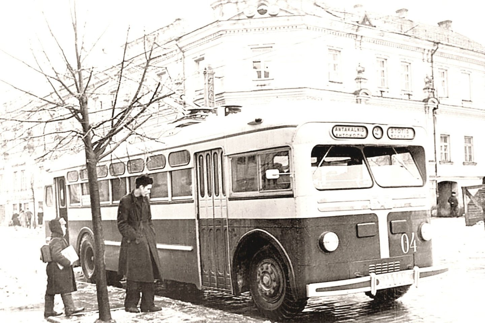 |
MTB-82D troleibusas Kilmės šalis: SSRS Gaminimo metai: 1956-1959 Atvyko į Vilnių: 1956 Tarnavimo trukmė: Nurašyti apie 1970m., tarnavo apie 10-14 metų. |
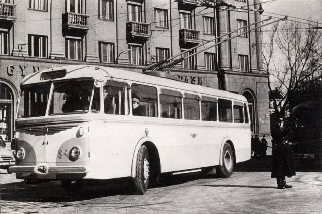 |
Škoda 8Tr troleibusas Kilmės šalis: Čekoslovakija Gaminimo metai: 1960-1961 Atvyko į Vilnių: 1960 Tarnavimo trukmė: Nurašyti XXa. 8-ajame dešimtmetyje, tarnavo apie 12-15 metų. |
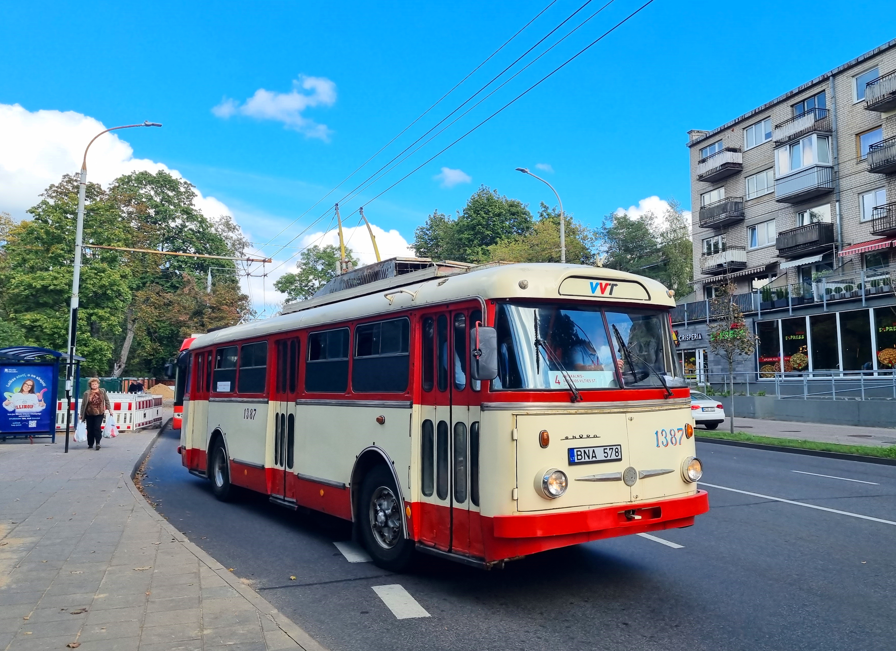 |
Škoda 9Tr troleibusas. Kilmės šalis: Čekoslovakija Gaminimo metai: 1961-1982 Atvyko į Vilnių: 1961 Tarnavimo trukmė: Paskutiniai baigė darbą 2006m., tarnavo apie 25-30 metų |
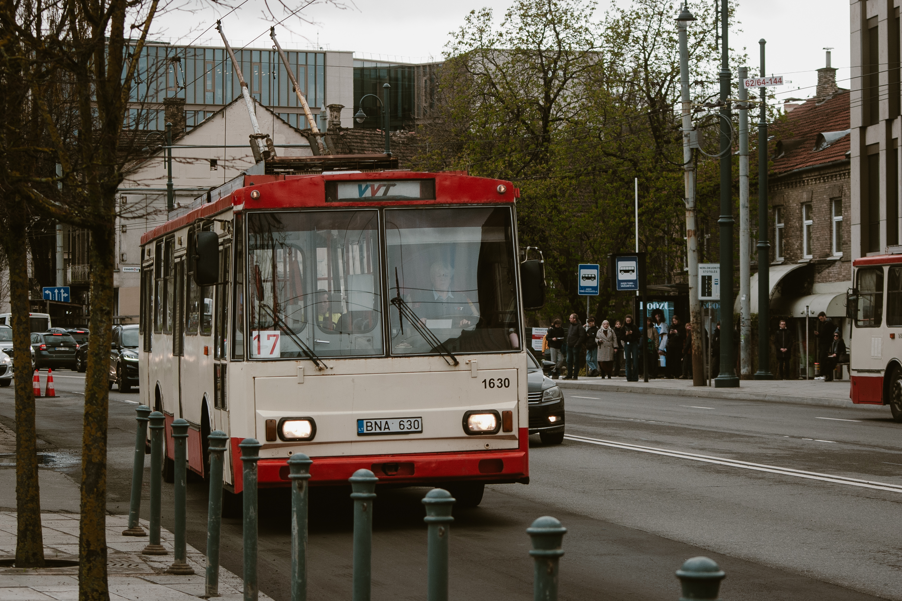 |
Škoda 14Tr troleibusas. Kilmės šalis: Čekoslovakija Gaminimo metai: 1982-1997 Atvyko į Vilnių: 1982 Tarnavimo trukmė: Paskutinai keičiami 2026m., tarnauja apie 29-40 metų |
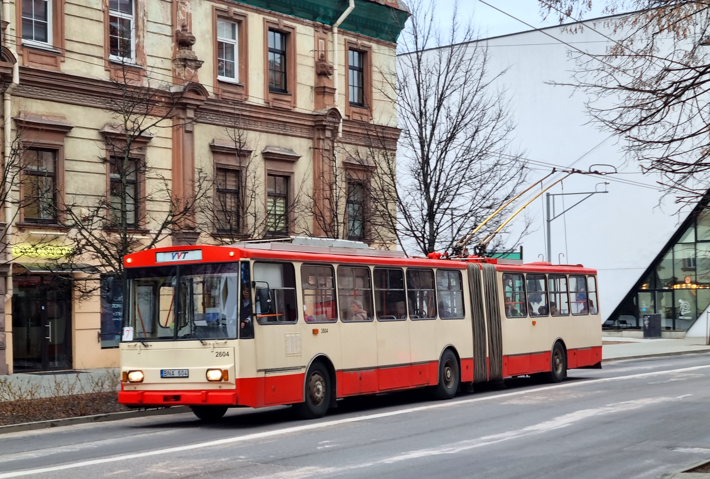 |
Škoda 15Tr troleibusas. Kilmės šalis: Čekoslovakija Gaminimo metai: 1990-1991 Atvyko į Vilnių: 1991 Tarnavimo trukmė: Paskutiniai eksploatuoti iki 2026m., tarnauja apie 35 metus. Vienas paliktas muziejui |
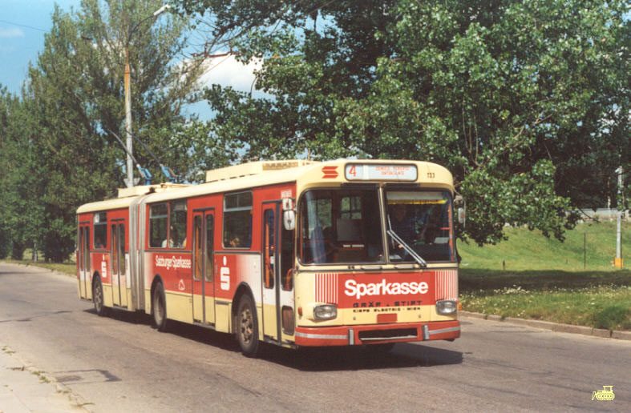 |
Gräf & Stift GE110 troleibusas. Kilmės šalis: Austrija Gaminimo metai: 1978 Atvyko į Vilnių: 1999 Tarnavimo trukmė: Naudoti gauti iš Zalcburgo, eksploatuoti iki 2005m., tarnavo apie 27 metus |
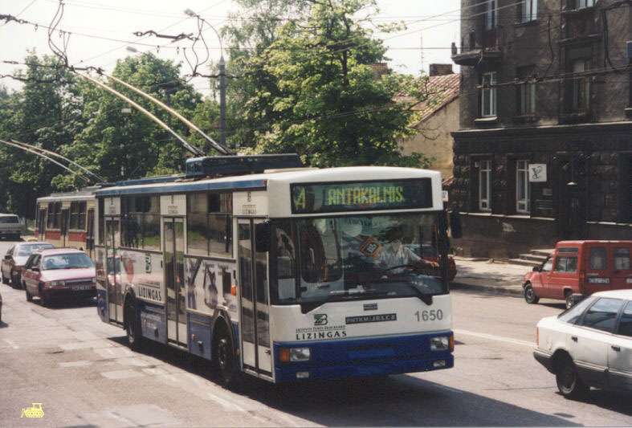 |
Jelcz M120MTE troleibusas. Kilmės šalis: Lenkija Gaminimo metai: 1998 Atvyko į Vilnių: 1998 Tarnavimo trukmė: Nurašyti 2011m., tarnavo 13-14 metų |
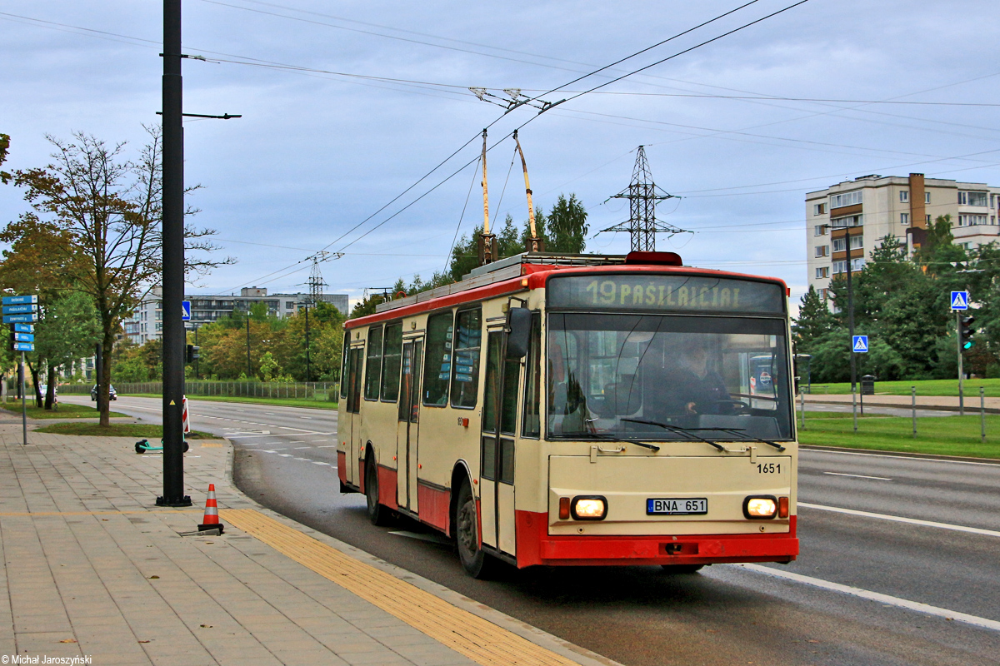 |
Škoda 14TrM troleibusas. Kilmės šalis: Čekoslovakija Gaminimo metai: 1999 Atvyko į Vilnių: 1999 Tarnavimo trukmė: Nurašomi 2026m., tarnauja jau 20-22 metus |
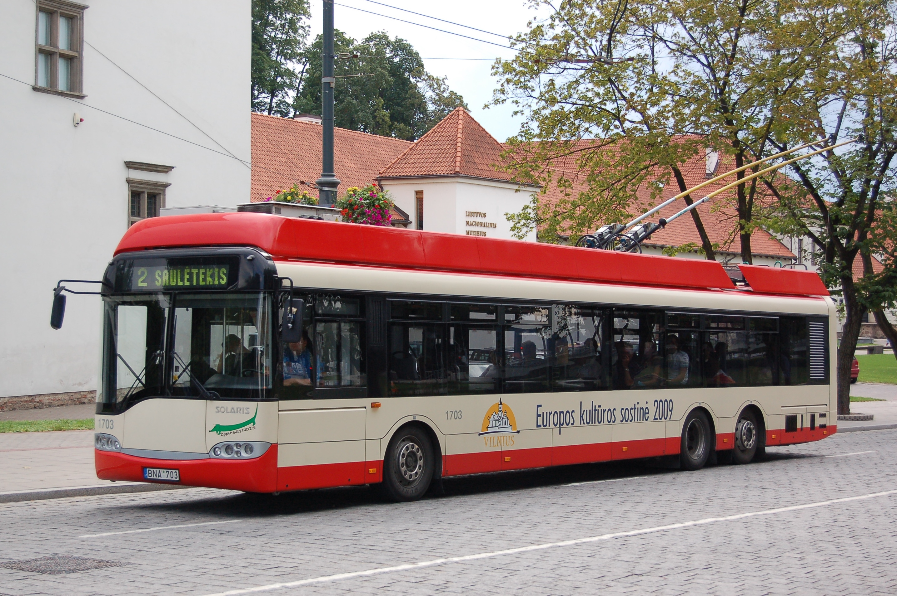 |
Solaris Trollino II 15 AC troleibusas. Kilmės šalis: Lenkija Gaminimo metai: 2004-2006 Atvyko į Vilnių: 2004-2006 Tarnavimo trukmė: Vis dar eksploatuojami, tarnauja jau 20-22 metus, netrukus bus keičiami |
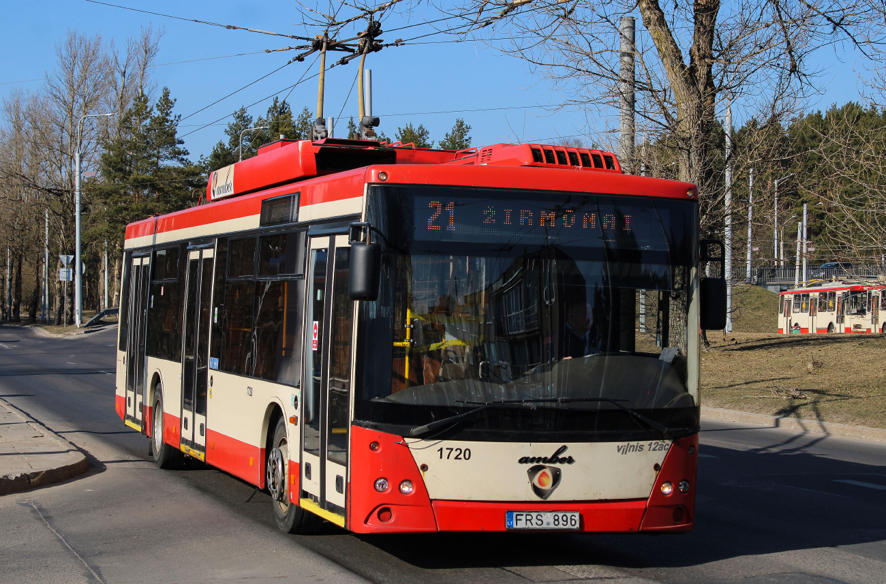 |
Amber Vilnis 12 AC troleibusas. Kilmės šalis: Baltarusija / Lietuva Gaminimo metai: 2011 Atvyko į Vilnių: 2012 Tarnavimo trukmė: Eksploatuoti iki 2024m., tarnavo apie 12 metų. Dabar jie važinėja Kryvyi Rih mieste, Ukrainoje |
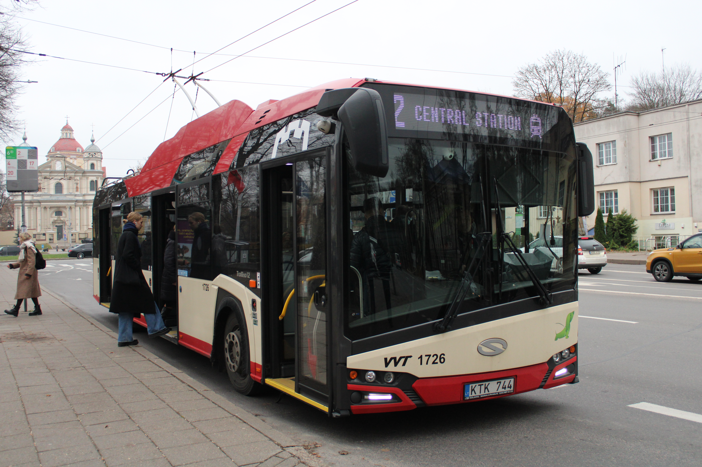 |
Solaris Trollino IV 12 Škoda troleibusas. Kilmės šalis: Lenkija Gaminimo metai: 2018-2019 Atvyko į Vilnių: 2018-2019 Tarnavimo trukmė: Eksploatuojami jau apie 7-8 metus, planuojamas tarnavimo laikas 15-20 metų |
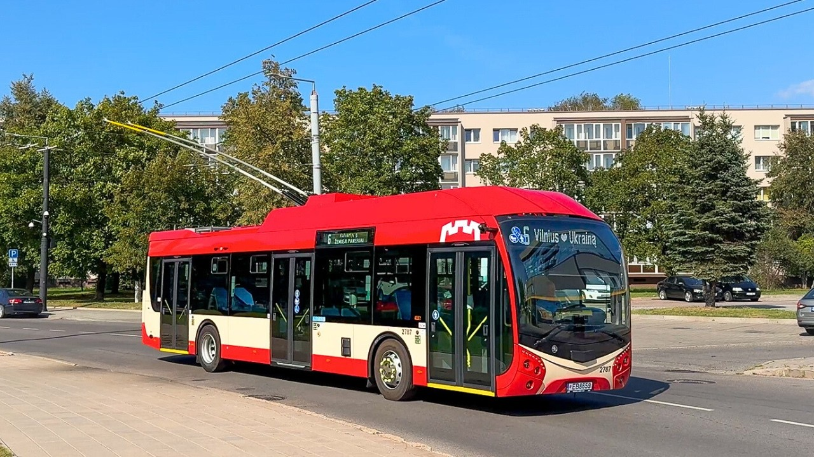 |
Škoda 32Tr SOR troleibusas. Kilmės šalis: Čekija Gaminimo metai: 2024 Atvyko į Vilnių: 2024 Tarnavimo trukmė: Eksploatuojami jau apie 2 metus, planuojamad tarnavimo laikas 15-20 metų |
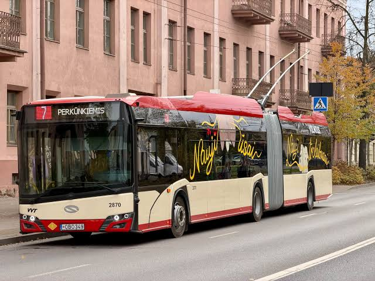 |
Solaris Trollino IV 18 troleibusas. Kilmės šalis: Lenkija Gaminimo metai: 2026 Atvyko į Vilnių: 2026 Tarnavimo trukmė: Naujausi troleibusai parke, eksploatuojami mažiau mėnesio (pradėjo važinėti nuo 2026-11), planuojamas tarnavimo laikas 15-20 metų |